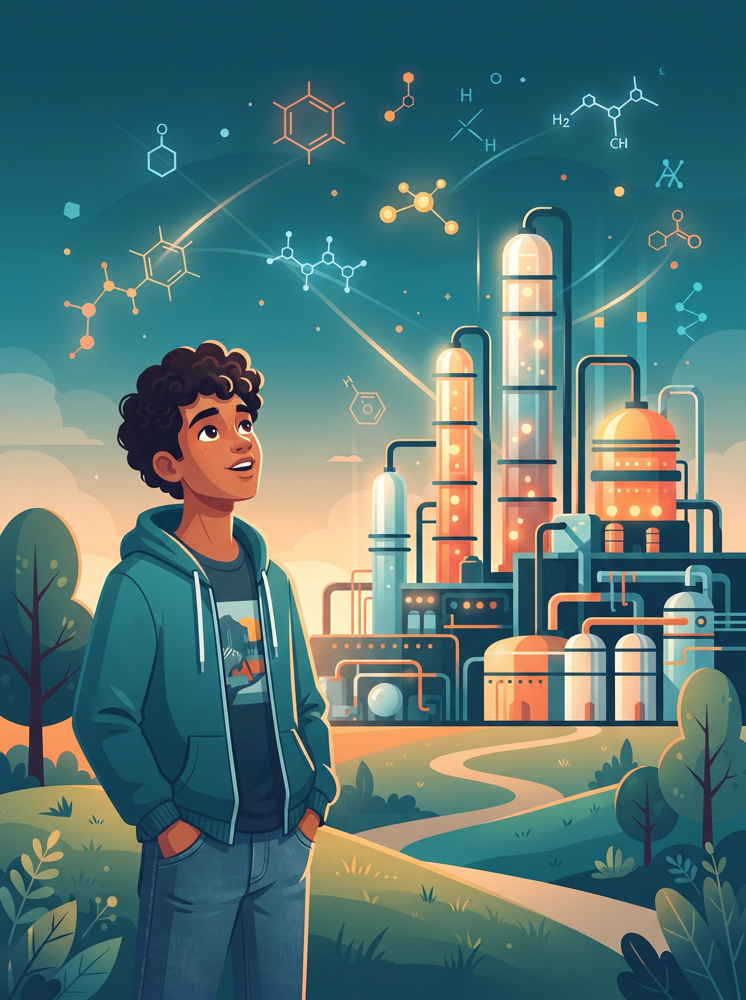
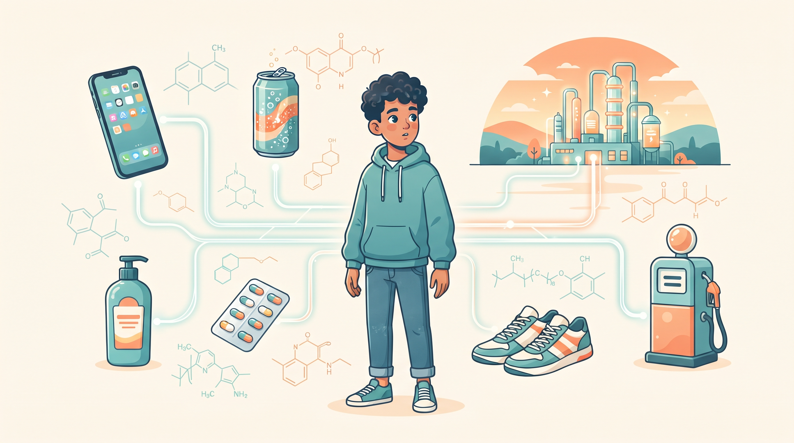
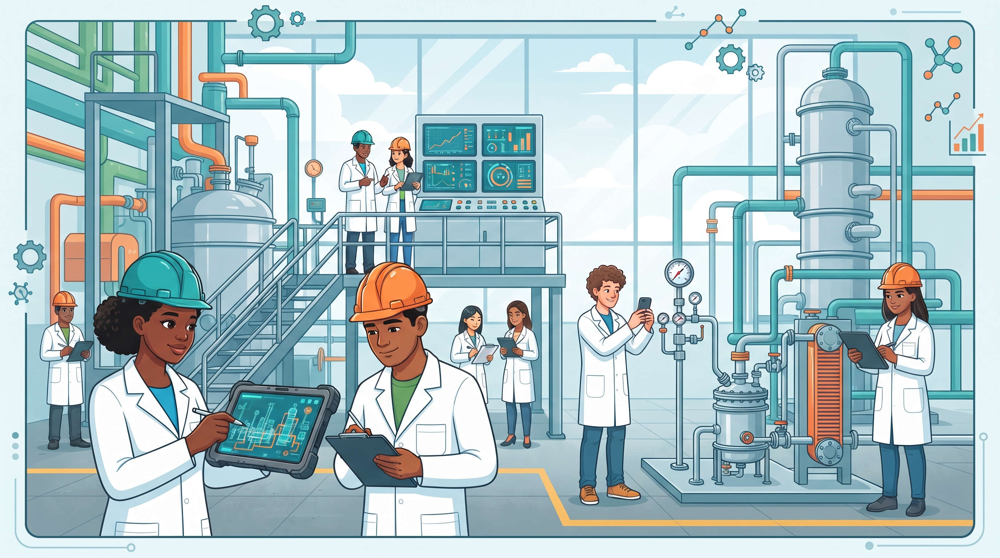
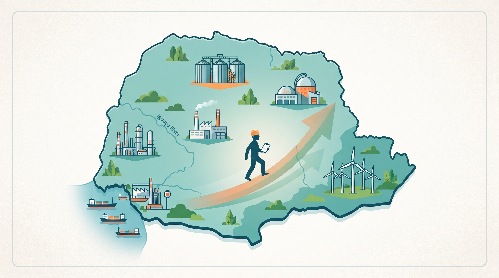
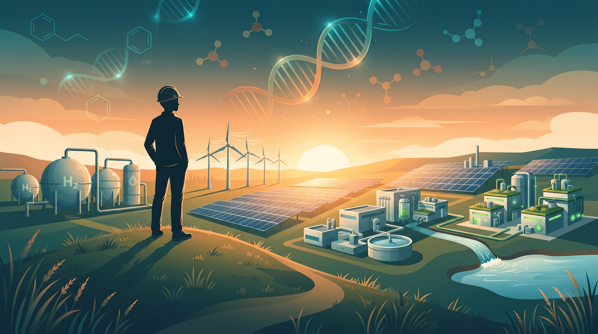

Você já parou para pensar?
Celular, refrigerante, shampoo, remédio: tudo tem ciência por trás — e alguém precisou produzir em grande escala.
Um guia para quem sonha em transformar o mundo — da ciência do laboratório aos produtos que mudam a vida das pessoas.
Celular, refrigerante, shampoo, remédio: tudo tem ciência por trás — e alguém precisou produzir em grande escala.
De fábricas de chocolate a refinarias: planejar e melhorar processos, produzindo mais com menos desperdício.
Curiosidade, disciplina e gosto por matemática e ciências. A boa notícia: ninguém nasce sabendo.
Os Botões de Napoleão e outras leituras que mostram como moléculas mudaram a história da humanidade.
5 anos de graduação, principais disciplinas e o perfil da UFPR e da UTFPR no Paraná.
Alimentos, cosméticos, medicamentos, energia, papel e celulose: 16 setores que precisam de engenheiros químicos.
Araucária, Paranaguá, Ponta Grossa, Londrina, Maringá e mais — e as faixas salariais da carreira.
Sete passos práticos para começar hoje: leitura, matemática, física, química e inglês.
Hidrogênio verde, química verde, economia circular, bioenergia e captura de carbono.
Grandes profissionais começaram com dúvidas, curiosidade e sonhos — exatamente como você.





Pronto para impressão ou leitura no celular. Baixe o arquivo ou leia diretamente abaixo.